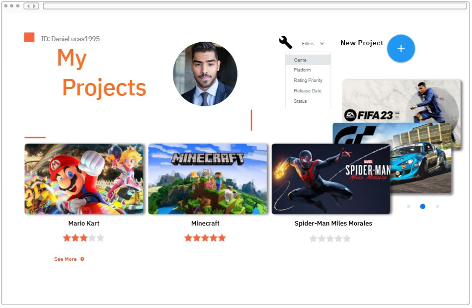
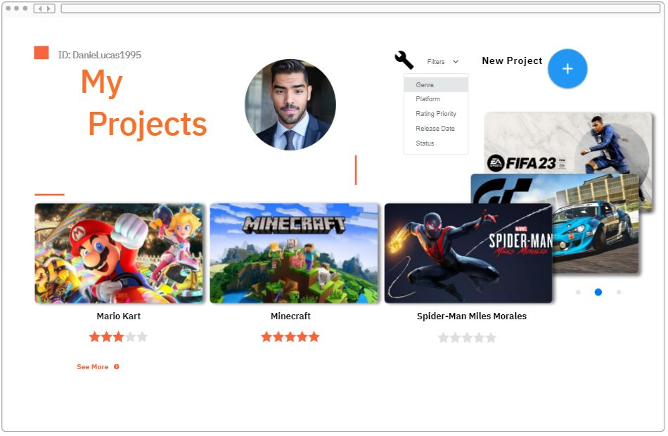

Use dados para melhorar a jogabilidade. Posso usar dados para identificar padrões no comportamento dos
jogadores e usá-los para aprimorar a jogabilidade.
Crie experiências personalizadas utilizando dados. Posso empregar informações coletadas para oferecer
experiências sob medida aos jogadores, recomendando jogos, níveis ou conteúdo de acordo com análise de dados.
Monetize seus jogos de forma estratégica. Posso ajudar a direcionar jogadores para anúncios ou produtos
relevantes, contribuindo para maximizar o potencial de geração de receita.
Desenvolva mecânicas de jogo baseadas em dados. Utilize informações coletadas para identificar padrões no
comportamento dos jogadores e integre esses dados no design do jogo para uma experiência mais envolvente.
Personalize interações com os jogadores usando dados. Crie experiências únicas ao aplicar dados para adaptar o
conteúdo do jogo de acordo com as preferências individuais de cada jogador.
Explore estratégias de monetização com base em dados. Identifique oportunidades de geração de receita ao
utilizar informações dos jogadores para direcionar anúncios e produtos relevantes de maneira eficaz.
.png)
 (1).png)

 MASTER IN ENGLISH, CNA Idiomas – 5 anos Concluídos – Fluente em Inglês
BRITÂNICO e AMERICANO.
MASTER IN ENGLISH, CNA Idiomas – 5 anos Concluídos – Fluente em Inglês
BRITÂNICO e AMERICANO. Espanhol -
Avançado. Sou capaz de me comunicar e entender conversas práticas e textos em espanhol.
Espanhol -
Avançado. Sou capaz de me comunicar e entender conversas práticas e textos em espanhol. 



.png)
 (1).png)
.png)